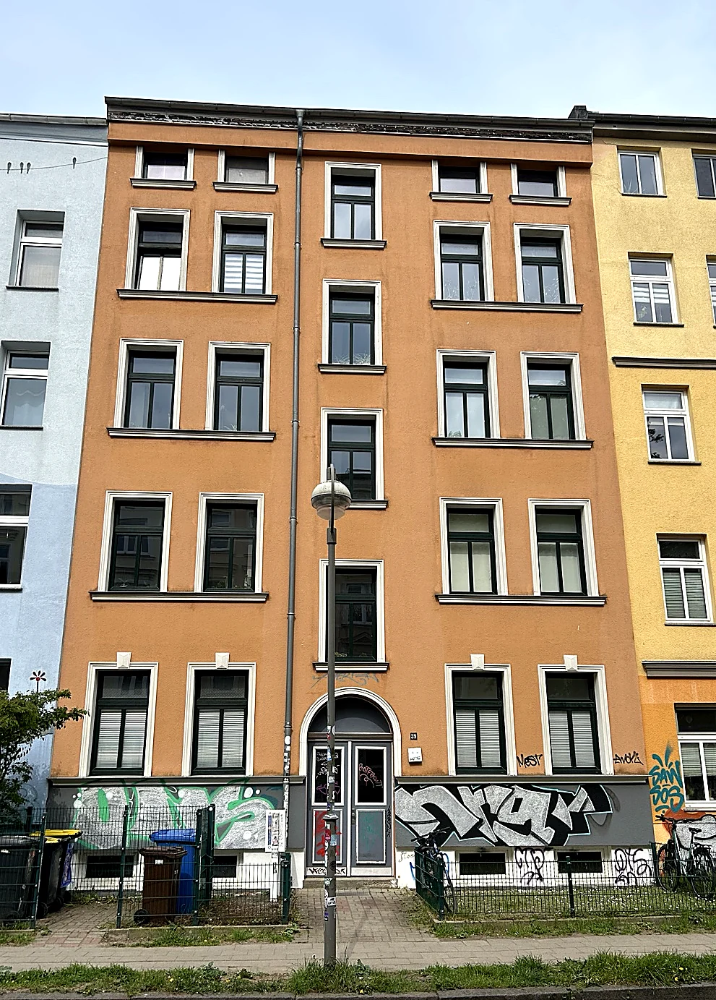
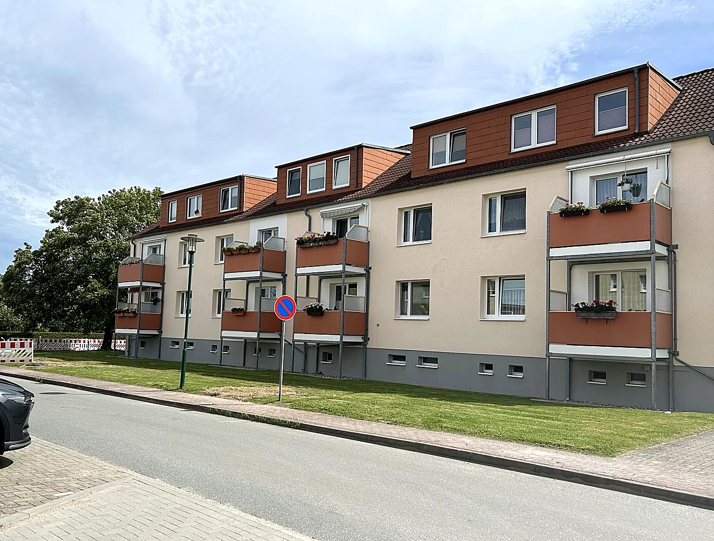

WEG-Verwaltung
Für WEGs, die klare Zahlen und persönliche Betreuung schätzen.
- Jahresabrechnung, Wirtschaftsplan & Vermögensbericht
- Eigentümerversammlungen & Beiratsbetreuung
- Beschlüsse, Handwerker & Instandhaltung
Persönliche Verwaltung für WEGs, Mietshäuser und Kapitalanleger – mit direktem Kontakt, klaren Zahlen und kurzen Wegen.
Leistungen
Für WEGs, die klare Zahlen und persönliche Betreuung schätzen.
Für vermietete Wohnungen – auch bei auswärtigen Eigentümern.
Für private Eigentümer ganzer Mehrfamilienhäuser.
Verwalterwechsel
Ort, Einheiten und Wechseltermin nennen.
Kennenlernen und offene Themen klären.
Unterlagen und offene Aufgaben geordnet übernehmen.
Mit klaren Prioritäten in den Betrieb starten.
Über mich
Diplom-Kaufmann · Dr. rer. pol. · Zertifizierter Verwalter (IHK)
Als Eigentümer von Wohnimmobilien und kleineren gewerblichen Immobilien kenne ich Kosten, Instandhaltung und Werterhalt aus eigener Erfahrung – und weiß, was Beiräten wichtig ist.
Meine eigenen Wohnungen und Garagen in Rostock und Umgebung vermiete und verwalte ich selbst – von der Mieterauswahl über Mietverträge und Nebenkostenabrechnungen bis zum direkten Kontakt mit den Mietern.
Mein betriebswirtschaftliches Fundament habe ich als Diplom-Kaufmann an der Christian-Albrechts-Universität zu Kiel gelegt. Dazu kommen meine Promotion zum Dr. rer. pol. und langjährige Erfahrung im Prozess- und Projektmanagement.
Aus eigenem Bestand
Eigene Wohnungen an zwei Standorten, ergänzt um kleinere gewerbliche Immobilien – Erfahrung aus Vermietung und laufender Bewirtschaftung.

Städtischer Altbau · Eigenbestand
Eigene Wohnungen im Altbau – Erfahrung mit WEG-Themen, Vermietung und Bestandspflege.

Wohnanlage · Eigenbestand
Eigene Wohnungen in einer Wohnanlage – Vermietung, Betriebskosten und laufende Instandhaltung.
Weitere Möglichkeiten
Ergänzende immobilienwirtschaftliche Tätigkeitsfelder:
Verkauf und Vermietung von Wohnungen, Häusern und Gewerberäumen begleiten.
Kosten, Verträge und Abläufe bei Bauprojekten wirtschaftlich im Blick behalten.
Weitere Leistungen derzeit in Vorbereitung – noch keine gewerblichen Aufträge für Dritte.
Häufige Fragen
WEGs, Mietshäuser und vermietete Eigentumswohnungen – vorzugsweise im Raum Rostock, weitere gut erreichbare Standorte nach Absprache.
Ja. Ort, Einheitenzahl, Wechseltermin und Ihre wichtigsten Anliegen reichen zunächst.
Unterlagen und Vorgänge bleiben übersichtlich dokumentiert. Der persönliche Kontakt bleibt wichtig.
Noch nicht. Unverbindliche Vorgespräche für künftige Wechseltermine sind nach Vereinbarung möglich.
Unverbindlicher Erstkontakt
Für den Erstkontakt genügen Ort, Objektart und Ihr Anliegen. Schreiben Sie mir oder rufen Sie direkt an.
Per E-Mail anfragen
Adresse kopieren und im eigenen Mailprogramm verwenden.
Oder lieber persönlich sprechen?
0151 56822067Direkter Kontakt zum Inhaber
Vorgespräche nach Vereinbarung.